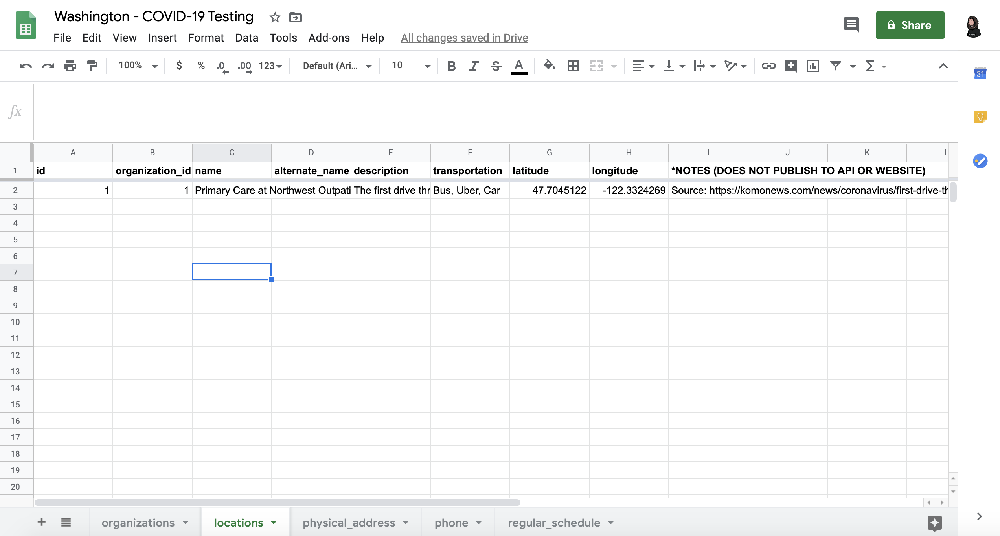
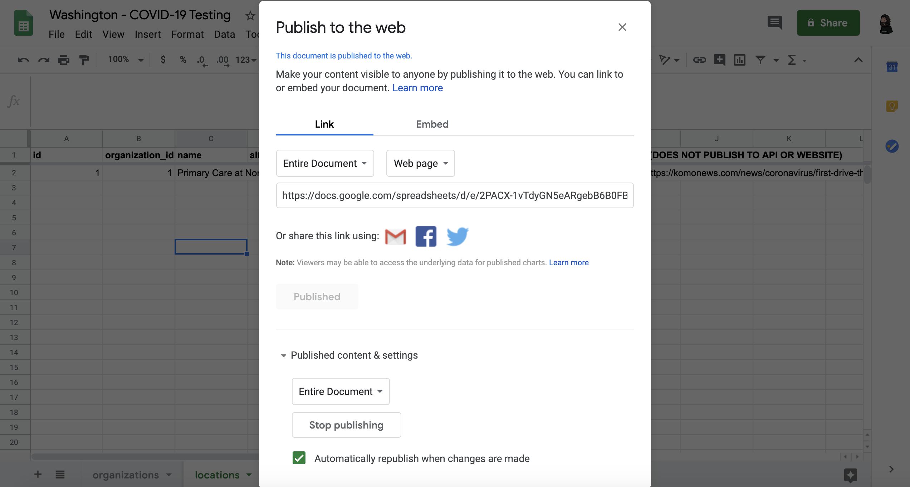
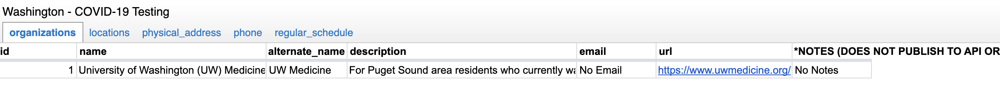
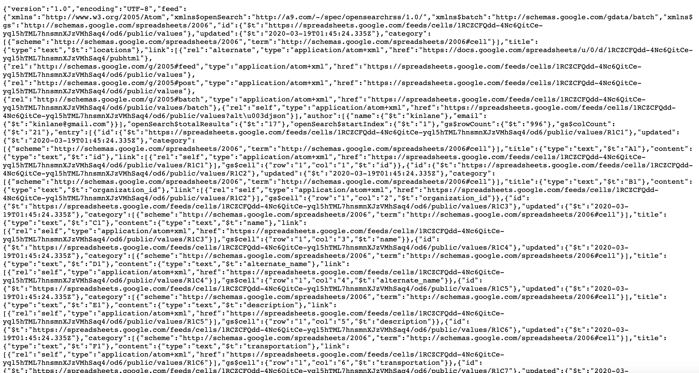
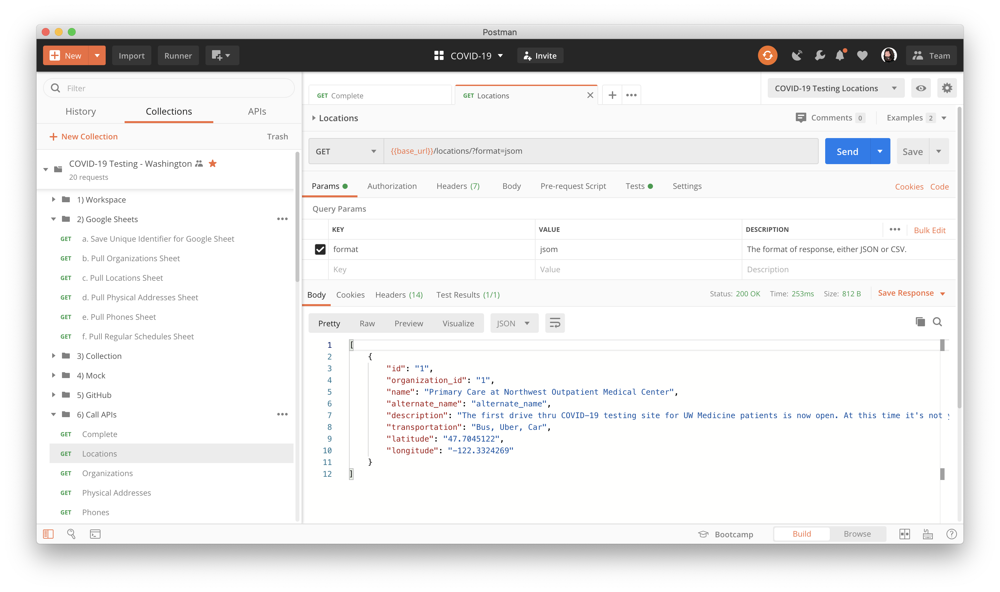
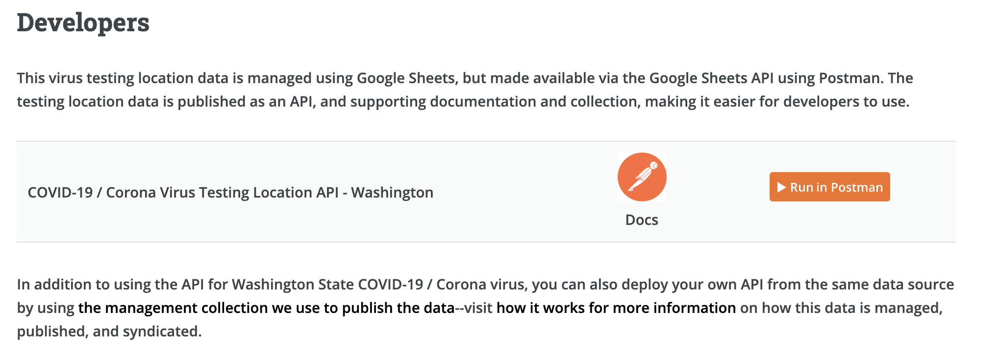
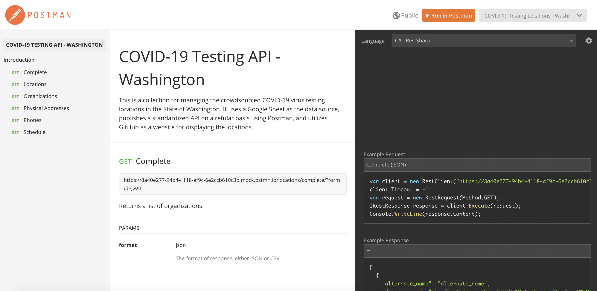
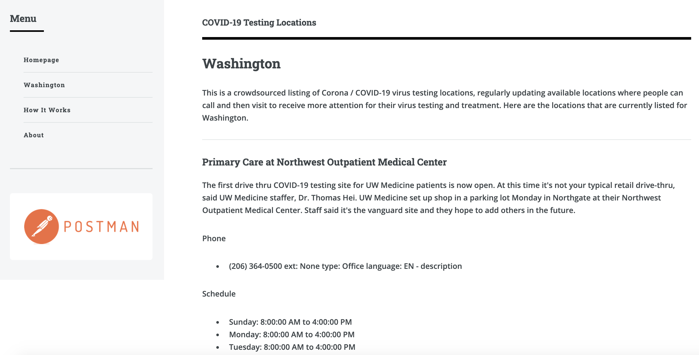
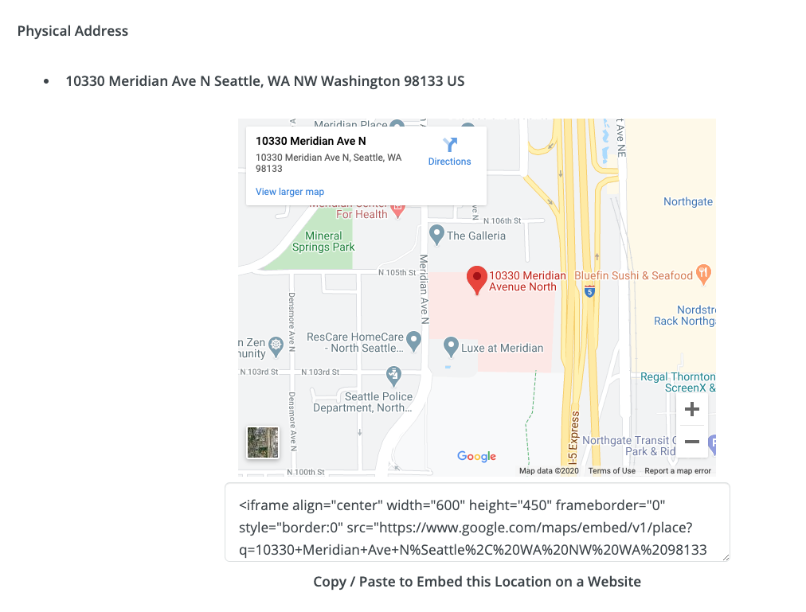

This is a crowdsourced listing of Corona / COVID-19 virus testing locations, regularly updating available locations where people can call and then visit to receive more attention for their virus testing and treatment.
All of the testing location data is managed centrally in a single Google Sheet for each state using the Open Referral form, provding a standardized set of data that encoiurages interoperatability.

A small group of people will have editing capabilities over the spreadsheet, gathering new locations from conversations, searches, emails, and other engagements.
The testing location data Google Sheet is then published to the web, making the data more accessible and visibile to other potential stakeholders. Minimizing who can edit, but expanding who has access to view the data.

The project takes advatage of existing Google Sheets features and security to help manage the integrity and quality of the location testing data.
Everyone will have access to view the Google Sheet online, but only users who have been invited to manage using Google Apps will be able to make changes to the testing location data.

Google Sheets provides a free and easy way to manage the data behind our location testing project while not requiring new technology or specialized training for users.
Once the Google Sheet for each state has been published to the web, it also makes it accessbile in a machine readable way using the Google Sheets API, opening up programmatic access to testing location data.

The challenge with using the Google Sheet API is that it isn't the friendliest and most intuitive format to work with, introducing a pretty significant learning curve before you can actually put it to work.
To help make the data easier to access we have produced a Postman Collection which pulls the data using the Google Sheets API, maps to its data format then publishes an API using Postman mock APIs, once again making it avaialble in the more intuitive, proven Open Referral format.

Postman provides a complete collection for pulling testing location data via the Google Sheets API, while also making sure it is available in the simpler Open Referral format. Available in a single package that can be run by any user after they make changes, or executed on a schedule using Postman monitors.
Now the testing location data can be made available in any website or mobile application, by any 3rd party developer without having to learn the details of how the Google Sheets API works. Simply by viewing the Postman documentation for the published API, and using the "Run in Postman" button for the testing location data API.

Providing a single, easy to read, and executable way to get at the COVID-19 testing location data for each state, while also allowing the central data source to be easily managed by anyone who understands how to edit Google Sheets.
Along with publishing of an API using the Postman collection, the Postman platform allows for quick publishing of documentation for each state's location testing. Making it easy for developers to understand the data that is available.

Standardizing how documentation is made available across testing location data across 50 states, providing specific documentation for each invididual state, but done in a consistent way using the Open Referral format and Postman.Having location testing data available as an API makes it easier for developers to publish the data to websites and mobile application, allowing the data to be centrally managed in a Google Sheet by many non-technical users, but then easily syndicated across multiple websites and applications by more technical users.

Increasing the reach of testing location data, while also ensuring that it is kept up to date because the it is always coming live from a central source, via simple, standards based APIs.
APIs are great for also powering embeddable widgets which can transform data into more visual and informative approaches to making the stream of data more helpful and caluable to consumers.

Increasing the reach of testing location data, while also ensuring that it is kept up to date because the it is always coming live from a central source, via simple, standards based APIs.
This project is about using existing services and APIs to help move forward the COVID-19 virus discussion, showing how APIs can be applied to make testing location data more available.
Crowdsourcing the aggregation and publising of data using Google Sheets, then making that data more standardized and accessible using Postman, and relying on GitHub for publishing a simple website to show what is possible.